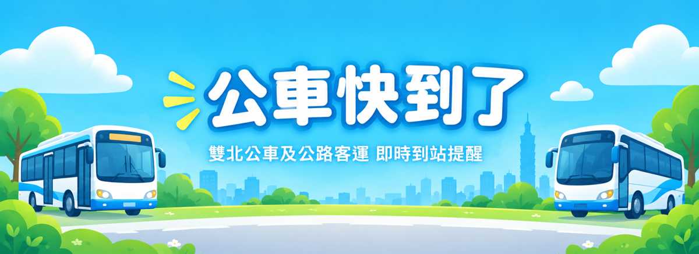

定位中
🔔 允許通知，背景時可收到公車提醒
允許通知
路線
站牌
🚌 加入公車
—
請從下方鍵盤輸入公車號碼
紅
藍
1
2
3
綠
棕
4
5
6
橘
小
7
8
9
幹線
F
0
⌫
清除
⭐ 儲存
🗑️ 清除
🔍 查詢
選擇幹線公車
🚌 選擇公路客運路線
方向
📋 待監控清單
起
選擇
›
訖
選擇
›
查詢
已暫停更新，點一下可繼續
🔔 即時到站狀況
🚌
公車快到了！
…
知道了 ✓
🎉
感謝使用
監控已結束
祝您旅程愉快！
關閉
正在下載站牌資料
準備中
再試一次
圖示
✕
站名
✕
搜尋
⚙️ 設定
✕
🔑 TDX Client ID
🔐 TDX Client Secret
ℹ️ 請至
tdx.transportdata.tw
免費申請 API 金鑰。
金鑰儲存在您的裝置瀏覽器中，不會上傳至任何伺服器。
💾 儲存 API 金鑰
💾 站牌資料快取
快取狀態：計算中…
下載
🏠 回家站
未設定
站名
清除
⭐ 預設站牌
九宮格正中央是回家，這 8 個站排在其餘格子。
🚌 常用路線
查看
🔔 提前幾站開始提醒
提前 2 站
提前 3 站
提前 4 站
提前 5 站（預設）
提前 6 站
提前 7 站
🎙️ 語音播報聲音
👨 男聲
👩 女聲
🔤 字體大小
標準
A
大字
A
特大
A
📳 鍵盤震動回饋
關閉
開啟後，點擊公車鍵盤時手機會短暫震動，確認按鍵成功
🔊 語音測試（iOS 請先按此解鎖音訊）
播放測試語音
🔔 背景通知測試
讀取中…
🔔 發送測試通知（3秒後觸發）
按下後請立刻將手機放到桌上或切換到其他 App，
3秒後應聽到通知聲音。
📱 背景提醒設定步驟（重要）
API 呼叫頻率
• 同一市區多條路線合併成 1 次即時位置呼叫
• 無公車在範圍內：每 60 秒更新
• 公車進入提醒範圍：每 30 秒更新
• 公車距離 2 站內：每 15 秒更新（同一市區）
• 同時監控兩個縣市時，更新會自動放慢，維持每分鐘最多 4 次
⭐ 常用路線
✕
⭐
尚未儲存任何常用路線